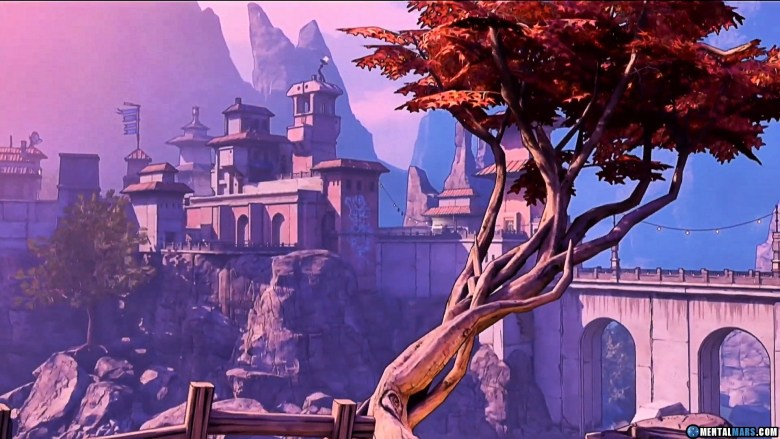

Taking place approximately five years after the events of Borderlands 2 and four years after the events of Tales from the Borderlands, Borderlands 3 begins with four new Vault Hunters - Amara the Siren, FL4K the Beastmaster, Moze the Gunner, and Zane the Operative - joining Lilith's Crimson Raiders as new recruits sent to investigate the Children of the Vault cult and their mysterious leaders, the Calypso twins, Tyreen and Troy, who are believed to be in possession of the long lost Vault Map. Upon reclaiming the Vault Map, The Crimson Raiders and allies board the Sanctuary III spacecraft to journey beyond Pandora to other planets throughout the galaxy to claim the Vaults they hold before the Calypsos can steal their power for themselves.
